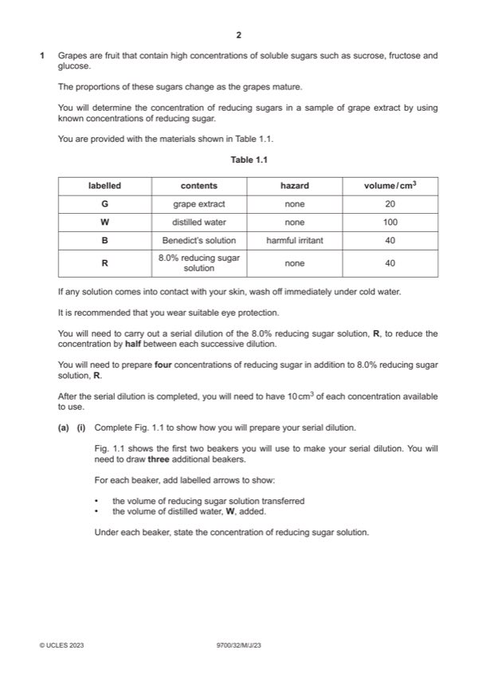

Question 1

Original paper page 2
Part 1(a)(i) — solution
1 correct concentrations (4.0, 2.0, 1.0, 0.5) and % at least once ; 3
Mark points
- Include the ideas shown in the solution above.
Part 1(a)(ii) — solution
1 heading for independent variable: percentage concentration of reducing sugar (before heading for dependent variable) 5
and no units in body of table ;
Mark points
- Include the ideas shown in the solution above.
Part 1(a)(iii) — solution
difficult to judge the first colour change ; 1
Mark points
- Include the ideas shown in the solution above.
Part 1(a)(iv) — solution
2 cm3 ; 1
Mark points
- Include the ideas shown in the solution above.
Part 1(a)(v) — solution
records a time for G between that recorded for 4.0% and 1.0% and seconds ; 1
Mark points
- Include the ideas shown in the solution above.
Part 1(a)(vi) — solution
1 scale on x-axis: 2% to 2 cm, labelled at least every 2 cm 2
and
scale on y-axis: according to candidate results ;
Mark points
- Include the ideas shown in the solution above.
Part 1(a)(vii) — solution
1 shows interpolation of result for G on the graph ; 2
Mark points
- Include the ideas shown in the solution above.
Part 1(a)(viii) — solution
any two suggestions: 2
Mark points
- Include the ideas shown in the solution above.
Part 1 — solution
more concentrations around the value for the estimate in (a)(vii) ;
Mark points
- Include the ideas shown in the solution above.
Part 1(b)(i) — solution
1 x-axis: age of grapes and days 2
and
y-axis: percentage concentration of reducing sugars ;
Mark points
- Include the ideas shown in the solution above.
Part 1(b)(ii) — solution
correct age estimated from graph ; 1
Mark points
- Include the ideas shown in the solution above.
Part 1(c) — solution
1 the concentration of amylase and reducing sugar increase as grapes age ; 3
Mark points
- Include the ideas shown in the solution above.